În vacanța de toamnă ne-am unit forțele, de la mic la mare, și ne-am apucat de o treabă la care ne gândeam de mult: să pregătim terenul ca grădina să treacă mai ușor prin verile secetoase.
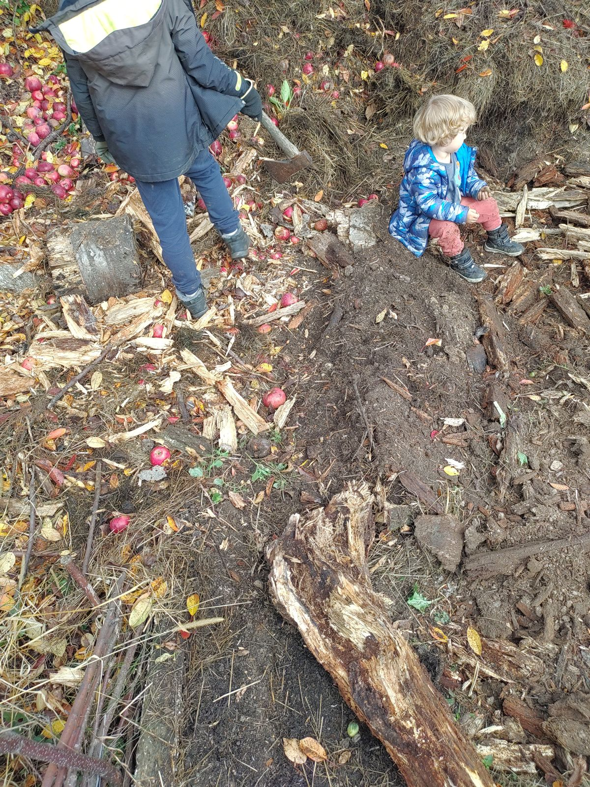
🪵 Lemnele de pe pârâu
În spatele grădinii curge un pârâu. Spre sfârșitul verii, când seceta a pus stăpânire, lemnele aduse de viituri s-au uscat și au putut fi transportate. Am umplut o remorcă cu ele și le-am depozitat în grădină până săptămâna aceasta, când am găsit timp să le integrăm în grădină. Pe cele mari le-am spart și le-am rupt în bucăți mai mici.
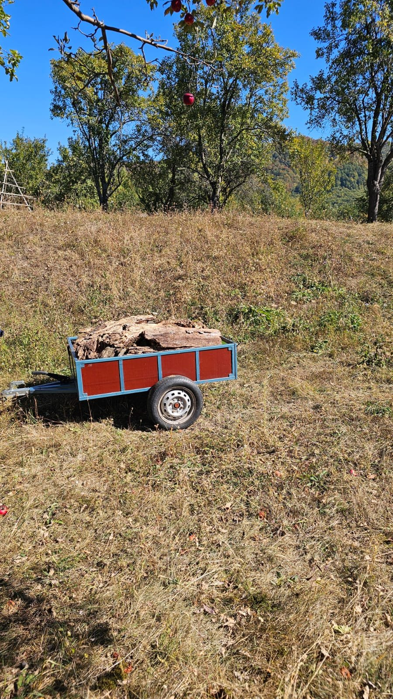
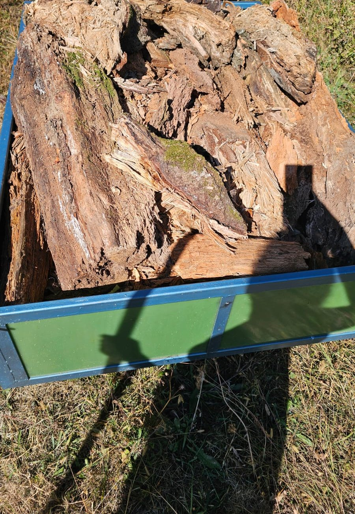
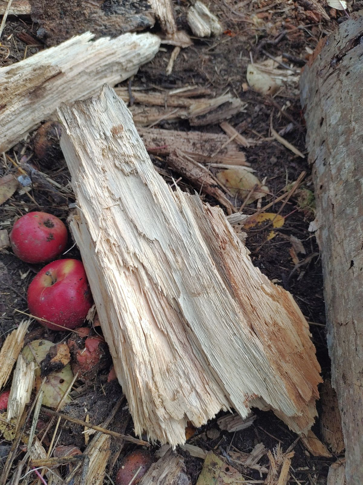
⛏️ Pământul fertil, pus deoparte
Mai întâi am dat la o parte tot stratul de pământ fertil. Pe fundul stratului am așezat lemnele, unele lângă altele.
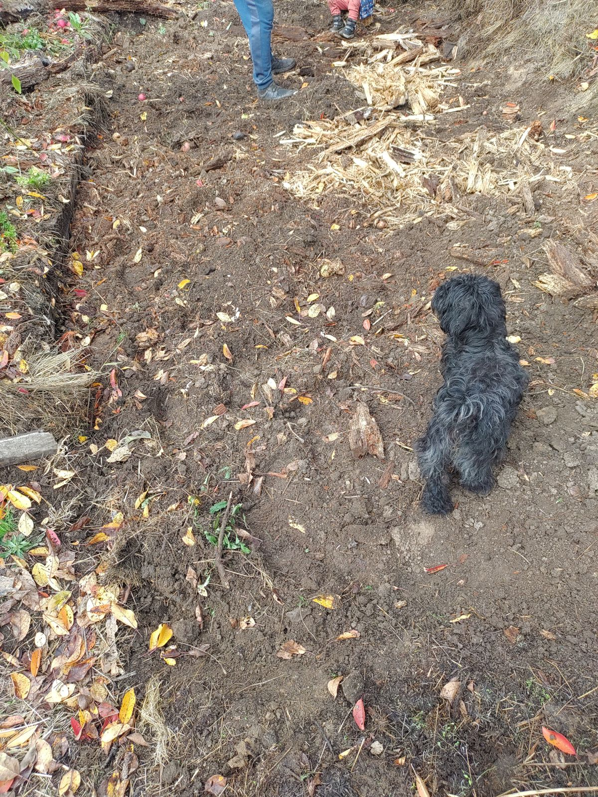
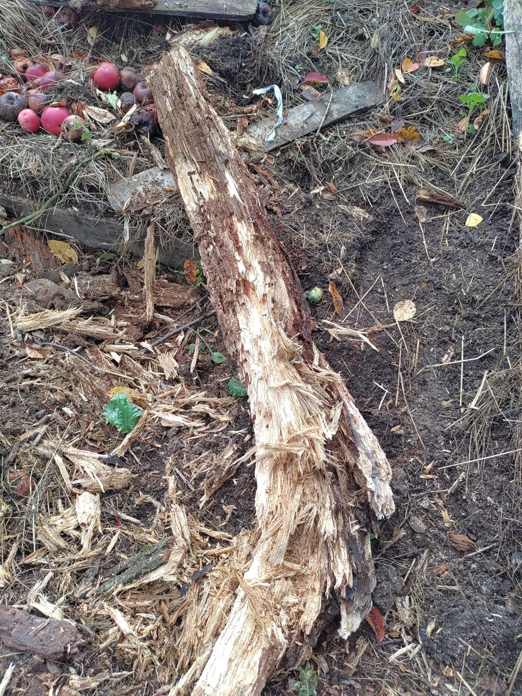
💧 Lemne care se poartă ca niște bureți
De ce lemne? Pentru că în pământ ele se poartă ca niște bureți. Absorb apa când plouă și o păstrează mult timp în sol, așa că pe secetă rădăcinile plantelor găsesc umezeală acolo jos. Încet-încet, lemnul se descompune și devine hrană pentru sol și pentru viața mică din el.
🌳 Ce ne arată natura
Dacă privim în natură, acolo unde nu a intervenit nimeni, vedem același lucru. Dintr-o buturugă mare, putrezită de ani mulți, un mesteacăn și-a înfiripat bine rădăcinile și a crescut puternic și înalt. A crescut singur, fără ajutorul nimănui. Doar natura.
Lemnul vechi a ținut apa, a hrănit pământul și a devenit leagăn pentru o viață nouă. Exact asta încercăm și noi să facem în grădina noastră.
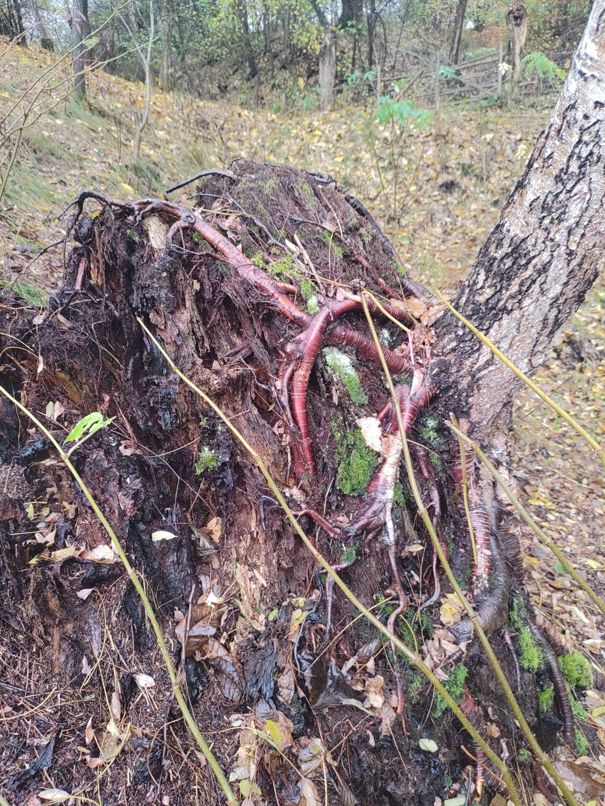
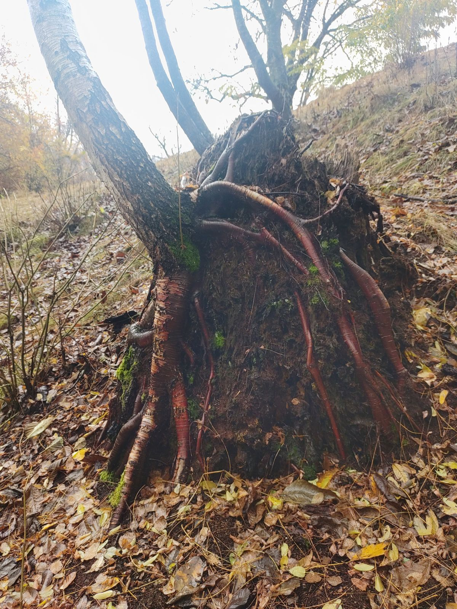
🍂 Pământ din locul cu compost
Peste lemne am adus pământ fertil dintr-o altă zonă a grădinii, acolo unde am făcut compost: negru, afânat și plin de viață. Resturile din bucătărie își continuă și ele drumul spre grădină, prin compost.
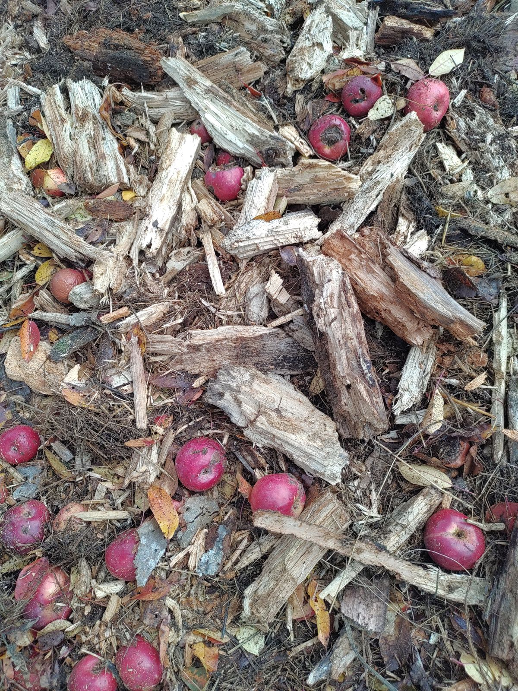
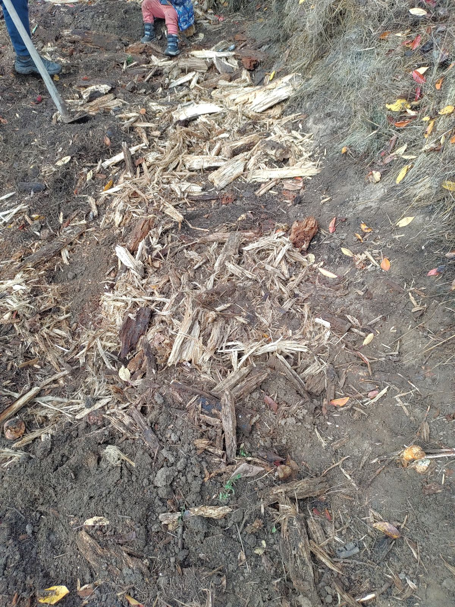
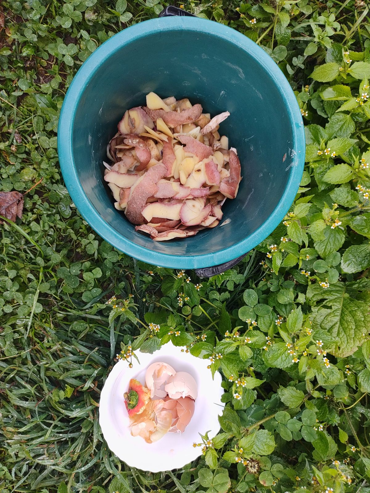
🍒 Un strat de mere și frunze de cireș
La final am pus un strat de mere și, deasupra, frunzele strânse de sub cireși. Ele acoperă pământul ca o plapumă: îl apără peste iarnă, păstrează umezeala și se transformă încet în humus.
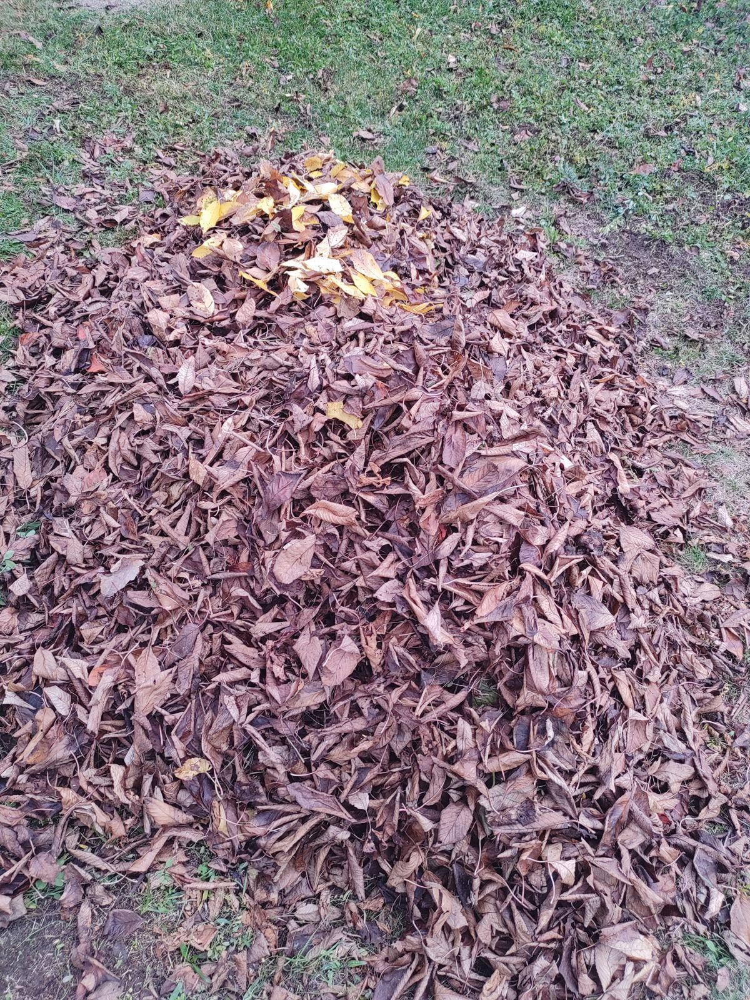
🌾 Ce urmează…
Peste frunze vom adăuga și paiele strânse din vară. Ele sunt ultimul strat al plăpumii, care ține pământul acoperit și umed peste iarnă.
Apoi stratul se va odihni. Lemnele se vor îmbiba cu apă, iar pământul, frunzele și paiele vor lucra împreună, fără grabă. Vara viitoare vom vedea cât de bine ține apa. Vă povestim. 🌱
Voi ce faceți cu lemnele, frunzele și paiele din grădină? Ne-ar plăcea să ne spuneți.